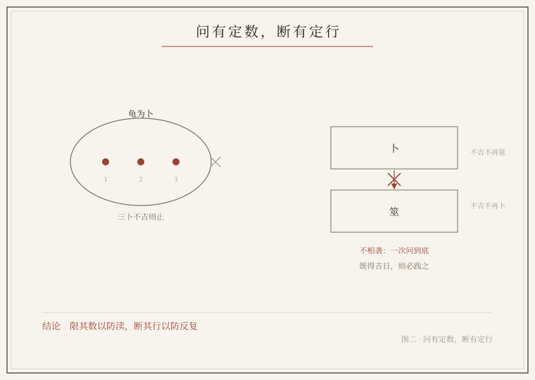

曲礼上 · 一·一百一十五 · 第 113 课
卜筮不过三次，卜与筮不相因袭。龟为卜，策为筮。卜筮是干什么用的：使民信时日、敬鬼神、畏法令，决嫌疑、定犹与。既卜则不再三心二意，既得吉日就必践之。
说什么事：卜筮不过三，卜筮不相袭。龟为卜，策为筮。卜筮者，先圣王之所以使民信时日、敬鬼神、畏法令也；所以使民决嫌疑、定犹与也。故曰：「疑而筮之，则弗非也；日而行事，则必践之。」
落在哪一层：礼意，兼及制。讲的是「问卜的规矩」，其实是「决断的规矩」。
为何编在此位：上节言择日之辞，此节言择日之限。有辞而无度，则渎。
【经】卜筮不過三，卜筮不相襲。龜為卜，策為筮。卜筮者，先聖王之所以使民信時日、敬鬼神、畏法令也；所以使民決嫌疑、定猶與也。故曰：「疑而筮之，則弗非也；日而行事，則必踐之。」
【注】求吉不過三。魯四卜郊，《春秋》譏之。卜不吉則又筮，筮不吉則又卜，是瀆龜策也。晉獻公卜取驪姬不吉，公曰「筮之」是也。弗非，無非之者。日，所卜筮之吉日也。踐讀曰善，聲之誤也。策或為蓍。
不过三 注「求吉不过三」。疏引王肃「礼以三为成」；「上旬、中旬、下旬，三卜筮不吉，则不举也」。
不相袭 注「卜不吉则又筮，筮不吉则又卜，是渎龟策也」。疏「袭，因也」。
龟为卜，策为筮 疏「龟处筮后，龟覆于筮。策为筮者，筮在龟前为决也。谓蓍为策者，策以谋策为义」。
信时日／敬鬼神／畏法令 疏「时者，四时及一日十二时也。日者，甲乙之属……君行法令，若依卜筮而为之，则民敬而畏之也」。
决嫌疑／定犹与 疏引《说文》「犹，兽名，玃属」；「与亦是兽名，象属。此二兽皆进退多疑，人多疑惑者似之」。
弗非 注「无非之者」。
践 注「读曰善，声之误也」；王肃如字，「履也」。
卜筮不超过三次，卜与筮不相因袭。龟用于卜，蓍策用于筮。卜筮这件事，是先圣王用来使民信从时日、敬事鬼神、畏守法令的，也是用来使人决断嫌疑、安定犹疑的。所以说：有疑而筮，就没有人再非议它；择定了日子行事，就必须照办。
一节五句，前两句是限，中间两句是用，末两句是断。限其数，是防渎；明其用，是防惑；断其行，是防反复。合起来是一句：问卜是为了决，不是为了拖。
第一层 不过三 三卜不吉则止。不是神不应，是人不可再烦。求吉而至于四，所求已不是吉，是侥幸。
第二层 不相袭 注举晋献公卜取骊姬不吉而「筮之」为例。一次问到底，问不到就换一种问法，是自欺。
第三层 决嫌疑、定犹与 疏以二兽之多疑为喻，极妙。犹与不是谨慎，是站住不动。卜筮的用处，正是把站住的人推一步。
第四层 必践之 注读「践」为「善」，王肃读「履」。两读皆通，而意更重在前者：既得吉日，就行得好。若卜而不行，则卜为戏。
与今日何干 决策的成本，多半不在信息不足，而在反复。设定的次数用尽，就落地。
| 左 | 右 |
|---|---|
| 卜筮不过三 | 求吉不过三，三不吉则止 |
| 卜筮不相袭 | 卜不吉不再筮，筮不吉不再卜 |
| 龟为卜，策为筮 | 龟象，蓍数，各有所主 |
| 信时日、敬鬼神、畏法令 | 先圣王之所以立卜筮 |
| 决嫌疑、定犹与 | 犹与二兽，进退多疑 |
| 疑而筮之则弗非 | 既问则人无非之 |
| 日而行事则必践之 | 既定则必行 |
画同一枚龟甲连问三次的痕迹：甲面上三道灼痕自左至右排列，第三道之后空无一痕；甲的下方另画一束蓍草，草茎只取三根、并排整齐，第四根缺失。甲与草之间横着一道短横线，线右端断开。不画人、不写文字。赭色只用在三道灼痕上。
